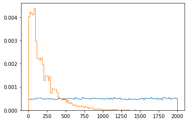
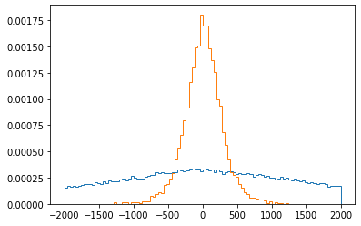
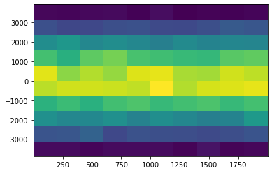
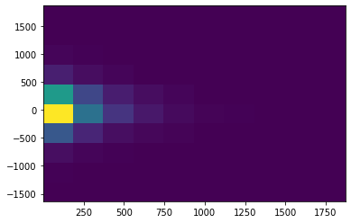
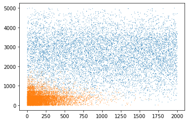
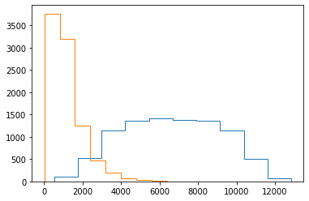
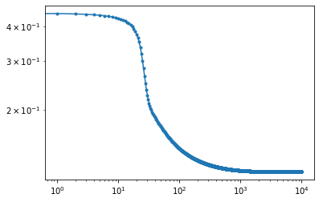
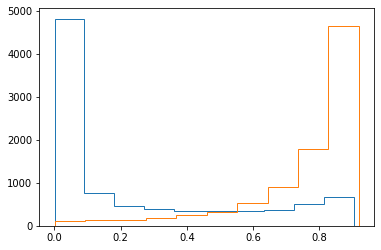
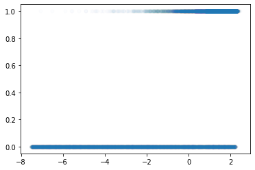

머신러닝 프로그래밍 12주차 - Binary classification with data Logistic regrsssion
import pandas as pd
import numpy as np
import matplotlib.pyplot as plt
df1 = pd.read_csv("cat1.csv")
df0 = pd.read_csv("cat0.csv")
df1
| entry | event | En1 | En2 | dt | dr | x1 | y1 | z1 | x2 | y2 | z2 | |
|---|---|---|---|---|---|---|---|---|---|---|---|---|
| 0 | 0 | 1 | 1.315638 | 1.804403 | 151.967212 | 42.143105 | -1304.894054 | 478.462799 | 1544.333537 | -1157.361908 | 606.067041 | 1766.707850 |
| 1 | 1 | 13 | 4.827913 | 2.283814 | 161.020364 | 1309.103187 | -117.835790 | -1464.457077 | 69.425318 | -70.148754 | -383.723470 | -475.833903 |
| 2 | 2 | 16 | 3.011821 | 2.606455 | 72.997202 | 903.456139 | 1593.153637 | -1100.580348 | 805.977081 | 1092.321506 | -1257.393260 | 215.991954 |
| 3 | 3 | 22 | 3.109662 | 1.619302 | 95.681674 | 246.310774 | 1414.147550 | 300.466078 | 2036.144245 | 1510.664013 | 317.401116 | 2038.324112 |
| 4 | 4 | 37 | 2.795250 | 1.665277 | 85.430204 | 452.633419 | -1185.771203 | -1586.241286 | -921.906685 | -1048.390809 | -1585.937883 | -1129.581104 |
| ... | ... | ... | ... | ... | ... | ... | ... | ... | ... | ... | ... | ... |
| 9949 | 9949 | 99956 | 1.499017 | 2.253849 | 174.517405 | 938.596974 | -1091.980671 | 1203.741862 | -840.761911 | -1055.791096 | 574.858610 | -1024.616952 |
| 9950 | 9950 | 99957 | 2.705410 | 2.874333 | 715.772076 | 175.621626 | 950.171373 | 898.111879 | -1897.760471 | 962.544864 | 677.295582 | -1880.154811 |
| 9951 | 9951 | 99983 | 2.943438 | 2.512821 | 1179.579896 | 60.482252 | -1437.391692 | 807.265834 | 1213.002043 | -1571.892213 | 721.972273 | 1238.615481 |
| 9952 | 9952 | 99987 | 3.082408 | 2.868833 | 145.649583 | 494.576245 | -1658.602340 | -479.454709 | -1472.514450 | -1619.486255 | -669.457050 | -931.362227 |
| 9953 | 9953 | 99993 | 3.196240 | 1.490613 | 43.678549 | 213.871359 | 1165.018820 | 1386.749830 | -722.045299 | 1158.905657 | 1062.491877 | -889.901928 |
9954 rows × 12 columns
plt.hist(df0["dt"], bins=100, density=True, histtype="step");
plt.hist(df1["dt"], bins=100, density=True, histtype="step");

#density - 확률 밀도를 설정하기 위해 가중치 데이터를 정규화한다
plt.hist(df0["y1"]-df0["y2"], bins=100, range=(-2000,2000), density=True, histtype="step");
plt.hist(df1["y1"]-df1["y2"], bins=100, range=(-2000,2000), density=True, histtype="step");

plt.hist2d(df0["dt"], df0["y1"]-df0["y2"]);

plt.hist2d(df1["dt"], df1["y1"]-df1["y2"]);

df0 = df0[:9000]
df1 = df1[:9000]
# plt.plot 옵션 - https://namyoungkim.github.io/matplotlib/visualization/2017/10/06/visualization/
#markersize (ms)->마커 크기
plt.plot(df0["dt"], df0["dr"], '.', ms=0.5)
plt.plot(df1["dt"], df1["dr"], '.', ms=0.5)
[<matplotlib.lines.Line2D at 0x7f4cafacce10>]

plt.hist(4*df0["dt"]+df0["dr"], histtype="step")
plt.hist(4*df1["dt"]+df1["dr"], histtype="step")
(array([3.766e+03, 3.191e+03, 1.252e+03, 4.780e+02, 1.930e+02, 7.500e+01,
3.300e+01, 6.000e+00, 4.000e+00, 2.000e+00]),
array([ 15.20712953, 810.57056653, 1605.93400353, 2401.29744052,
3196.66087752, 3992.02431452, 4787.38775152, 5582.75118852,
6378.11462551, 7173.47806251, 7968.84149951]),
<a list of 1 Patch objects>)

#시그 모이 드 함수는 수학적 로지스틱 함수입니다. 통계, 오디오 신호 처리, 생화학 및 인공 뉴런의 활성화 기능에 일반적으로 사용됩니다. 시그 모이 드 함수의 공식은F(x) = 1/(1 + e^(-x))입니다.
def sigmoid(z):
return 1/(1+np.exp(-z))
def f(x, y, a, b, c):
return a*x + b*y + c
dts1 = np.array(df1['dt'])/1000
dts0 = np.array(df0['dt'])/1000
drs1 = np.array(df1['dr'])/1000
drs0 = np.array(df0['dr'])/1000
label1 = np.ones(dts1.shape)
label0 = np.zeros(dts0.shape)
dts = np.concatenate([dts1, dts0])
drs = np.concatenate([drs1, dts0])
label = np.concatenate([label1, label0])
data = np.stack([dts, drs, label], axis=1) #가로축으로 합쳐진다
np.random.shuffle(data)
data
array([[0.38524939, 0.06985145, 1. ],
[0.03403795, 0.31482386, 1. ],
[0.01535261, 0.25602788, 1. ],
...,
[0.56028966, 0.56028966, 0. ],
[0.3714466 , 0.3714466 , 0. ],
[0.28964576, 0.28964576, 0. ]])
def gradF(x, y, a, b, c):
# 1/(1+np.exp(-z))
z = f(x, y, a, b, c)
yy = sigmoid(z)*(1-sigmoid(z))
# a*x + b*y + c
da = yy*x
db = yy*y
dc = yy*1
return da, db, dc
losses = []
fitA, fitB, fitC = 1, 1, 1
batchSize = 16
eta = 1e-3
for epoch in range(10000):
sumLoss = 0.
nBatch = 0
for batch in range(0, len(data), batchSize):
### Compute loss
x = data[batch:batch+batchSize+1].T #DataFrame.transform()는DataFrame에 함수를 적용하고 DataFrame을 변환합니다.
dt, dr, label = x[0], x[1], x[2]
z = f(dt, dr, fitA, fitB, fitC)
z = sigmoid(z)
df = label - z
loss = (df**2).mean()
### Gradient
#grad = -2*df*gradF(dt, dr, fitA, fitB, fitC)
gradA, gradB, gradC = gradF(dt, dr, fitA, fitB, fitC)
gradA = (df*gradA).mean()
gradB = (df*gradB).mean()
gradC = (df*gradC).mean()
### parameter update
fitA = fitA + gradA*eta
fitB = fitB + gradB*eta
fitC = fitC + gradC*eta
### loss monitor
#losses.append(loss)
sumLoss += loss
nBatch += 1
losses.append(sumLoss/nBatch)
plt.plot(losses, '.-');
plt.yscale('log')
plt.xscale('log')

data0 = data[data[:,2]==0]
data1 = data[data[:,2]==1]
plt.hist(sigmoid(f(data0.T[0], data0.T[1], fitA, fitB, fitC)), histtype='step')
plt.hist(sigmoid(f(data1.T[0], data1.T[1], fitA, fitB, fitC)), histtype='step')
(array([ 101., 133., 146., 177., 260., 320., 527., 900., 1776.,
4660.]),
array([8.41085958e-04, 9.27254960e-02, 1.84609906e-01, 2.76494316e-01,
3.68378726e-01, 4.60263136e-01, 5.52147546e-01, 6.44031956e-01,
7.35916366e-01, 8.27800777e-01, 9.19685187e-01]),
<a list of 1 Patch objects>)

plt.plot(f(data.T[0], data.T[1], fitA, fitB, fitC), data.T[2], '.', ms=10, alpha=0.01)
#plt.hist(f(data1.T[0], data1.T[1], fitA, fitB, fitC)), histtype='step')
[<matplotlib.lines.Line2D at 0x7f4cac627850>]
